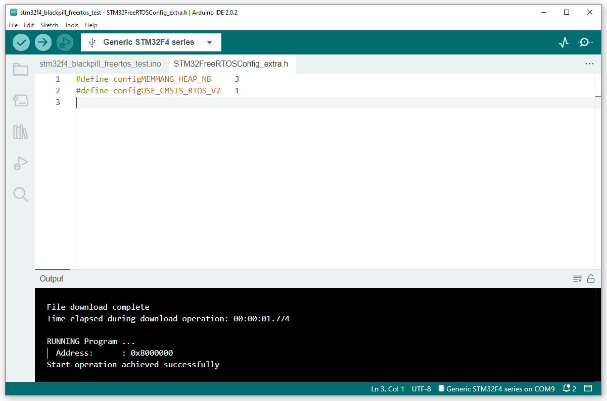
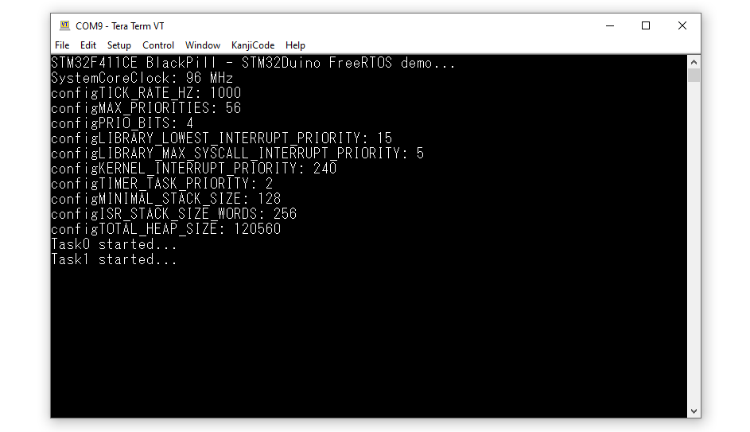

การเขียนโปรแกรมไมโครคอนโทรลเลอร์ STM32F4 โดยใช้ Arduino - STM32duino และ FreeRTOS#
Keywords: STM32F4, BlackPill Boards, Arduino, STM32duino, FreeRTOS
▷ บอร์ดไมโครคอนโทรลเลอร์ STM32F4#
ไมโครคอนโทรลเลอร์ STM32F4 Series ของบริษัท STMicroelectronics มีตัวประมวลผลหรือซีพียูขนาด 32 บิต ที่ทำงานได้ตามสถาปัตยกรรมชุดคำสั่ง Arm Cortex-M4 บอร์ดไมโครคอนโทรลเลอร์ STM32F411CEU6 (BlackPill) ที่ได้มีการออกแบบและจำหน่ายโดยบริษัท WeAct Studio ในประเทศจีน เป็นตัวเลือกหนึ่งที่น่าสนใจ เนื่องจากมีราคาถูก
ในการเขียนโปรแกรมไมโครคอนโทรลเลอร์ STM32F4 โดยทั่วไป ผู้ใช้สามารถเขียนโปรแกรมด้วยภาษา C/C++ และเลือกใช้ไลบรารีของบริษัท STMicroelectronics เช่น STM32F4 HAL (Hardware Abstraction Layer) ซึ่งมีรายละเอียดตามเอกสาร UM1725 User manual รวมถึงมีซอฟต์แวร์ประเภท IDE ให้เลือกใช้ได้ เช่น STM32CubeIDE
อย่างไรก็ตาม ในปัจจุบันการเขียนโปรแกรมสำหรับ STM32 สามารถทำได้ง่ายขึ้น โดยใช้ Arduino API เป็นพื้นฐานในการเขียนโค้ด โดยจะต้องมีการติดตั้งซอฟต์แวร์ Arduino Core สำหรับชิป STM32 ที่มีชื่อว่า STM32duino
แนะนำให้ศึกษาบทความที่เกี่ยวข้อง:
- "แนะนำการใช้งานบอร์ดไมโครคอนโทรลเลอร์ STM32F4x1 BlackPill"
- "การเขียนโปรแกรม Arduino สำหรับบอร์ด STM32 Nucleo"
▷ การเริ่มต้นใช้งาน Arduino IDE#
ถัดไปเป็นตัวอย่างการใช้งานซอฟต์แวร์ Arduino IDE v2 สำหรับการเขียนโปรแกรมบอร์ดไมโครคอนโทรลเลอร์ STM32F411CEU6 BlackPill ผู้ใช้จะต้องติดตั้ง Arduino Core for STM32 โดยไปที่เมนู "Files > Preferences > Additional Boards Manager URLs" เพิ่มรายการ URL ของไฟล์ .json ต่อไปนี้
https://github.com/stm32duino/BoardManagerFiles/raw/main/package_stmicroelectronics_index.json
รูป: เพิ่มรายการ URL ของไฟล์ .json สำหรับ STM32duino
จากนั้นไปยังเมนู "Tools > Board: ... > Boards Manager ในหน้าต่าง Boards Manager ให้ค้นหารายการสำหรับ STM32 แล้วคลิกเลือกและกดปุ่ม Install เพื่อทำการติดตั้ง STM32 Cores ซึ่งจะทำการดาวน์โหลดไฟล์ต่าง ๆ ที่เกี่ยวข้องจากอินเทอร์เน็ต
เวอร์ชันที่ได้ทดลองใช้คือ STM32duino v2.3.0
xpack-arm-none-eabi-gcc@10.3.1-2.3STMicroelectronics:STM32Tools@2.1.1STMicroelectronics:CMSIS@5.7.0
รูป: การติดตั้ง STM32duino - Arduino Core for STM32
ถัดไปให้สร้าง Arudino Sketch สำหรับการเขียนโค้ด โดยเลือกจากรายการบอร์ดให้ตรงกับ "Generic STM32F4 series > BlackPill F411CE"
ข้อสังเกต: ถ้าเลือกใช้บอร์ด BlackPill อีกรุ่นหนึ่งคือ STM32F401CC หรือ STM32F401CDU6 ก็ให้เลือก BlackPill F401CC"
ตัวอย่างโค้ดสาธิต: LED Blink
#define LED_PIN PC13 // onboard LED
void setup() {
pinMode( LED_PIN, OUTPUT );
}
void loop() {
static uint32_t state = 0;
// Toggle the LED state and update the LED output pin.
digitalWrite( LED_PIN, state ^= 1 );
// Wait for some delay before re-entering the loop function.
delay(100);
}
รูป: เลือกบอร์ดไมโครคอนโทรลเลอร์ที่ต้องการใช้งาน
เนื่องจากบอร์ด STM32F411CE BlackPill ไม่มีชิป USB-to-Serial Bridge
แต่สามารถใช้พอร์ต USB-C เชื่อมต่อกับคอมพิวเตอร์ผู้ใช้ และจะต้องเปิดใช้งาน USB-CDC
ดังนั้นในการโค้ด Arduino Sketch และใช้คำสั่ง
Serial หรือ SerialUSB โดยใช้วงจร USB ของชิป STM32F411CE
แนะนำให้เลือกรูปแบบการตั้งค่าดังนี้ "USB support (if available): enabled"
และสำหรับตัวเลือก U(S)ART support
ให้ตั้งค่าเป็น "CDC (generic 'Serial' supersede U(S)ART)"
รูป: การตั้งค่า USB Support สำหรับ USB-CDC
การอัปโหลดไฟล์เฟิร์มแวร์ (.bin) ที่ได้จากการคอมไพล์โค้ดของ Arduino Sketch มีให้เลือกได้หลายวิธี เช่น
- การใช้ SWD Programmer: วิธีนี้ต้องมีอุปกรณ์ที่เรียกว่า ST-Link/v2 หรือ ST-Link/v3 และใช้ร่วมกับคำสั่งของซอฟต์แวร์ STM32CubeProgrammer ของบริษัท STMicroelectronics
- การใช้ DFU Bootloader: ชิป STM32F4 ได้มีการติดตั้งโปรแกรม DFU Bootloader ไว้ภายในชิป ในหน่วยความจำแบบ ROM มาจากโรงงานแล้ว และจะใช้สำหรับการอัปโหลดไฟล์เฟิร์มแวร์ผ่านทางพอร์ต USB ในโหมด DFU และจะต้องใช้ร่วมกับซอฟต์แวร์ STM32CubeProgrammer เช่นกัน
ดังนั้นสำหรับสองวิธีนี้ จะต้องมีการดาวน์โหลดและติดตั้งซอฟต์แวร์ STM32CubeProgrammer ของบริษัท STMicroelectronics ในเครื่องคอมพิวเตอร์ของผู้ใช้ก่อน
รูป: เลือกวิธีการเพื่อใช้สำหรับการอัปโหลดไฟล์เฟิร์มแวร์: STM32CubeProgrammer (DFU)
รูป: ตัวอย่างการใช้งาน STM32CubeProgrammer เพื่อลองเชื่อมต่อกับบอร์ด STM32F411CE BlackPill ในโหมด DFU
ก่อนการอัปโหลด Arduino Sketch ผ่านทางพอร์ต USB ให้ทำขั้นตอนดังนี้
- เชื่อมต่อขา A10 (PA10/USB_FS_ID) ด้วยสาย Jumper Wire กับตัวต้านทาน 10k แบบ Pullup ไปยัง 3.3V
- เสียบสาย USB-C เชื่อมต่อบอร์ดไมโครคอนโทรลเลอร์กับคอมพิวเตอร์
- กดปุ่ม BOOT0 กดค้างไว้ กดปุ่ม RESET เพื่อรีเซตการทำงานของบอร์ด BlackPill ให้เข้าสู่ DFU Bootloader Mode แล้วจึงปล่อยปุ่ม RESET และ BOOT0 ตามลำดับ
- อัปโหลด Arduino Sketch หลังจากทำขั้นตอน Verify แล้ว ไปยังบอร์ด
รูป: การอัปโหลดด้วยวิธี STM32CubeProgrammer (DFU)
▷ LED Blink + Serial (USB)#
โค้ดตัวอย่างนี้สาธิตการส่งข้อความผ่านทางพอร์ต USB ที่เกี่ยวข้องกับการทำคำสั่งของ Serial
#define LED_PIN PC13
void setup() {
pinMode( LED_PIN, OUTPUT );
Serial.begin( 115200 );
while ( !Serial );
Serial.println( "STM32duino SerialUSB demo..." );
}
void loop() {
static uint32_t state = 0;
// Toggle the LED state and update the LED output pin.
digitalWrite( LED_PIN, state ^= 1 );
// Send the current state of the LED.
while (!Serial.availableForWrite()) { delay(1); }
Serial.printf( "state: %d\n", state );
// Wait for some delay before re-entering the loop function.
delay( 500 );
}
▷ Analog Input + PWM Output#
โค้ดตัวอย่างนี้สาธิตการอ่านค่าจากขาอินพุตแบบแอนะล็อก โดยใช้คำสั่ง
analogRead() ซึ่งจะมีการใช้งานวงจร ADC
(Analog-to-Digital Converter) ที่อยู่ภายในชิป STM32F4
และนำค่าที่อ่านได้ไปใช้สำหรับการปรับค่า Duty Cycle ของสัญญาณ PWM
(Pulse Width Modulation) ที่ถูกสร้างโดยคำสั่ง analogWrite()
#define LED_PIN PC13
#define AIN_PIN PA0
#define PWM_PIN PA5
// LDR (high-side, 3.3V) + resistor (low-side, GND)
// low light intensity -> lower PWM duty cycle, lower analog input voltage
//#define ADC_RESOLUTION (10)
//#define PWM_RESOLUTION (8)
//#define PWM_FREQ (1000)
#define ADC_RESOLUTION (12)
#define PWM_RESOLUTION (10)
#define PWM_FREQ (10000)
void setup() {
pinMode(LED_PIN, OUTPUT);
Serial.begin(115200);
while (!Serial);
Serial.println("STM32duino PWM output demo...");
// Set ADC resolution (default: 10 bits)
analogReadResolution(ADC_RESOLUTION);
// Set PWM resolution (default: 8 bits)
analogWriteResolution(PWM_RESOLUTION);
// Set PWM frequency (default: 1kHz)
analogWriteFrequency(PWM_FREQ);
// Write PWM value (zero)
analogWrite(PWM_PIN, 0);
}
void loop() {
// Read analog value.
int adc_value = analogRead(AIN_PIN);
// Write PWM value.
int pwm_value = 0;
int diff = (ADC_RESOLUTION - PWM_RESOLUTION);
if (diff >= 0) {
pwm_value = adc_value >> diff;
} else {
pwm_value = adc_value << (-diff);
}
analogWrite(PWM_PIN, pwm_value);
// Send a text to the Serial output.
Serial.printf("ADC: %lu, PWM: %lu\n", adc_value, pwm_value);
// Wait for some delay before re-entering the loop.
delay(200);
}
รูป: ตัวอย่างข้อความเอาต์พุตที่ได้รับจากบอร์ดและแสดงผลใน Arduino Serial Monitor
รูป: สัญญาณเอาต์พุต PWM (ความถี่ 1kHz)
รูป: สัญญาณเอาต์พุต PWM (เมื่อมีการตั้งค่าความถี่ให้เป็น 10kHz)
▷ STM32FreeRTOS: Multitasking#
ตัวอย่างโค้ดถัดไปสาธิตการเขียนโค้ดโดยใช้ไลบรารี STM32FreeRTOS เพื่อการเขียนโค้ดโดยใช้ FreeRTOS ซึ่งระบบปฏิบัติการเวลาจริง (RTOS) แบบ Open Source ผู้ใช้จะต้องมีการติดตั้งไลบรารี STM32FreeRTOS ก่อนทำขั้นตอนคอมไพล์โค้ดตัวอย่าง
ในโค้ดตัวอย่างมีการสร้าง "ทาสก์" (Tasks) ได้แก่ Task 0 และ Task 1 ซึ่งงานได้อิสระจากกัน
ทาสก์ทั้งสองทำหน้าที่สลับสถานะของลอจิกที่ขาเอาต์พุต PC13 และ PA5 ตามลำดับ
และทำให้เกิดอัตราการกระพริบของ LED ที่แตกต่างกัน (สลับสถานะลอจิกทุก ๆ 100 และ 10 มิลลิวินาที ตามลำดับของทาสก์)
// Arduino library: https://github.com/stm32duino/STM32FreeRTOS
#include <Arduino.h>
#include <STM32FreeRTOS.h> // use FreeRTOS v10.3.1 ported to STM32duino
#include <STM32FreeRTOSConfig.h> // use custom STM32-FreeRTOS configuration file
#define LED1_PIN PC13 // onboard LED
#define LED2_PIN PA5
void task0(void *pvParameters);
void task1(void *pvParameters);
#define TASK_STACK_SIZE (configMINIMAL_STACK_SIZE + 1024)
void setup() {
Serial.begin(115200);
while (!Serial)
;
Serial.println("STM32F411CE BlackPill Started...");
Serial.printf("SystemCoreClock: %lu MHz\n", (uint32_t)(SystemCoreClock / 1e6));
Serial.printf("configTICK_RATE_HZ: %lu\n", configTICK_RATE_HZ);
Serial.printf("configMINIMAL_STACK_SIZE: %lu\n", configMINIMAL_STACK_SIZE);
Serial.printf("configMAX_PRIORITIES: %lu\n", configMAX_PRIORITIES);
delay(100);
// Create Task 0
xTaskCreate(task0, "T0",
TASK_STACK_SIZE,
NULL, tskIDLE_PRIORITY + 1, NULL);
xTaskCreate(task1, "T1",
TASK_STACK_SIZE,
NULL, tskIDLE_PRIORITY + 1, NULL);
vTaskStartScheduler();
while (1) {}
}
void loop() {
}
// task entry function
void task0(void *pvParameters) {
(void)pvParameters;
int state = 0;
Serial.println("Task0 started...");
pinMode(LED1_PIN, OUTPUT);
while (1) {
digitalWrite(LED1_PIN, state ^= 1);
vTaskDelay(pdMS_TO_TICKS(100) /*msec*/);
}
}
// task entry function
void task1(void *pvParameters) {
(void)pvParameters;
Serial.println("Task1 started...");
int state = 1;
pinMode(LED2_PIN, OUTPUT);
while (1) {
digitalWrite(LED2_PIN, state ^= 1);
vTaskDelay(10 /*ticks*/); // 1 Tick = 1msec
}
}
นอกจากการสร้างไฟล์สำหรับ Arduino Sketch (.ino) ตามโค้ดตัวอย่างข้างล่าง
จะต้องมีการสร้างไฟล์อีกหนึ่งไฟล์ (เพิ่ม Tab) แล้วตั้งชื่อไฟล์ STM32FreeRTOSConfig.h
จากนั้นให้โค้ดจากไฟล์ FreeRTOSConfig_Default.h
มาใส่ลงในไฟล์ STM32FreeRTOSConfig.h

รูป: ตัวอย่างการสร้างไฟล์ STM32FreeRTOSConfig.h
เพิ่มโค้ดหนึ่งบรรทัดดังต่อไปนี้ เพื่อเลือกรูปแบบการใช้งานหน่วยความจำประเภท Heap สำหรับ FreeRTOS
ถ้าดูโค้ดในไฟล์ heap.c
จะหมายถึงการใช้โค้ดจากไฟล์ heap_3.c
#define configMEMMANG_HEAP_NB 3
เมื่ออัปโหลดโค้ดไปยังบอร์ด BlackPill ได้แล้ว จะต้องมีการเปิดพอร์ต Serial เพื่อรับข้อความจากบอร์ด
และจะเห็นว่า มีการกระพริบของ LED บนบอร์ดที่ต่อกับขา PC13

รูป: ตัวอย่างข้อความเอาต์พุตที่ได้รับมาจากบอร์ด STM32F411CE BlackPill
▷ Analog Input + PWM Output: Multitasking#
โค้ดตัวอย่างนี้สาธิตการสร้างทาสก์ โดยแบ่งเป็นสองทาสก์ที่ทำงานอิสระจากกัน
ทาสก์แรกทำให้ LED บนบอร์ดกระพริบด้วยอัตราคงที่
ทาสก์ที่สองอ่านค่าจากขาอินพุตแบบแอนะล็อก โดยใช้คำสั่ง
analogRead() ซึ่งจะมีการใช้งานวงจร ADC
(Analog-to-Digital Converter) ที่อยู่ภายในชิป STM32F4
และนำค่าที่อ่านได้ไปใช้สำหรับการปรับค่า Duty Cycle ของสัญญาณ PWM
(Pulse Width Modulation) ที่ถูกสร้างโดยคำสั่ง analogWrite()
// Arduino library: https://github.com/stm32duino/STM32FreeRTOS
#include <Arduino.h>
#include <STM32FreeRTOS.h> // use FreeRTOS v10.3.1 ported to STM32duino
#include <STM32FreeRTOSConfig.h> // use custom STM32-FreeRTOS configuration file
#define LED_PIN PC13
#define AIN_PIN PA0
#define PWM_PIN PA5
#define ADC_RESOLUTION (12)
#define PWM_RESOLUTION (10)
#define PWM_FREQ (10000)
void task0(void *pvParameters);
void task1(void *pvParameters);
void setup() {
Serial.begin(115200);
while(!Serial);
// Create Task 0
xTaskCreate(task0, "T0",
configMINIMAL_STACK_SIZE + 400,
NULL, tskIDLE_PRIORITY + 1, NULL);
xTaskCreate(task1, "T1",
configMINIMAL_STACK_SIZE + 400,
NULL, tskIDLE_PRIORITY + 1, NULL);
vTaskStartScheduler();
while (1) {}
}
void loop() {
}
#define MS_TO_TICKS(x) ((x) * configTICK_RATE_HZ/1000L)
// task entry function
void task0(void *pvParameters) {
(void)pvParameters;
int state = 0;
pinMode(LED_PIN, OUTPUT);
while (1) {
digitalWrite(LED_PIN, state ^= 1);
vTaskDelay( MS_TO_TICKS(100) );
}
}
// task entry function
void task1(void *pvParameters) {
(void)pvParameters;
// Set ADC resolution (default: 10 bits)
analogReadResolution(ADC_RESOLUTION);
// Set PWM resolution (default: 8 bits)
analogWriteResolution(PWM_RESOLUTION);
// Set PWM frequency (default: 1kHz)
analogWriteFrequency(PWM_FREQ);
// Write PWM value (zero)
analogWrite(PWM_PIN, 0);
while (1) {
// Read analog value.
int adc_value = analogRead(AIN_PIN);
// Write PWM value.
int pwm_value = 0;
int diff = (ADC_RESOLUTION - PWM_RESOLUTION);
if (diff >= 0 ) {
pwm_value = adc_value >> diff;
} else {
pwm_value = adc_value << (-diff);
}
analogWrite(PWM_PIN, pwm_value);
vTaskDelay( MS_TO_TICKS(100) );
}
}
▷ กล่าวสรุป#
บทความนี้แนะนำวิธีการเขียนโค้ด Arduino และใช้งาน STM32-FreeSTOS สำหรับบอร์ด STM32F411CE BlackPill ในเบื้องต้น
This work is licensed under a Creative Commons Attribution-ShareAlike 4.0 International License.
Created: 2022-12-01 | Last Updated: 2022-12-02